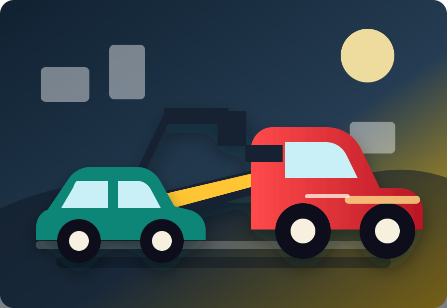
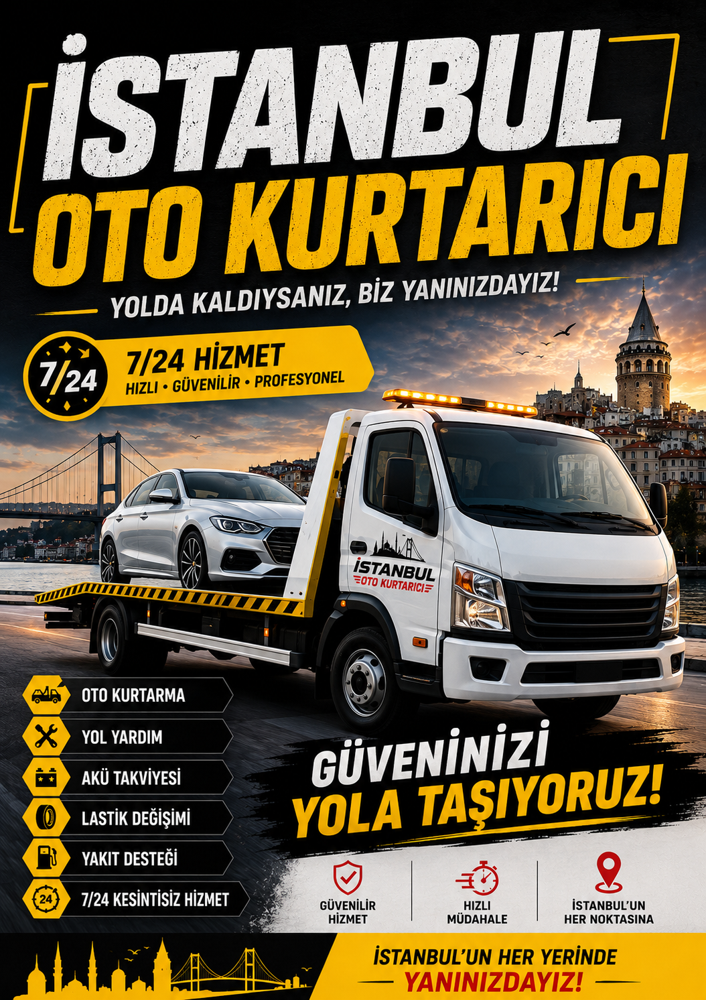
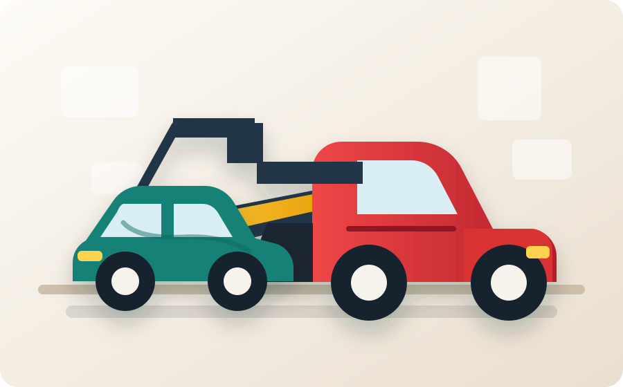
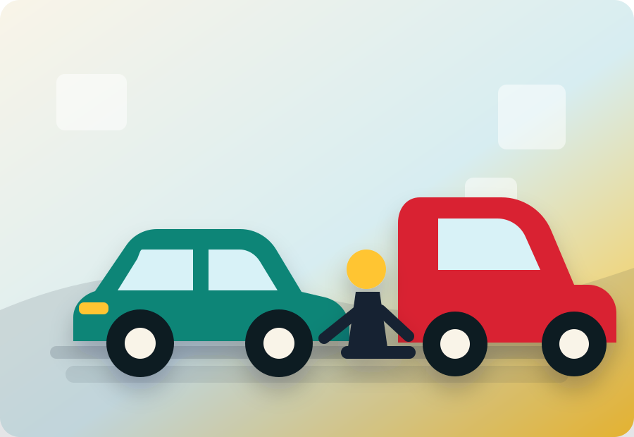
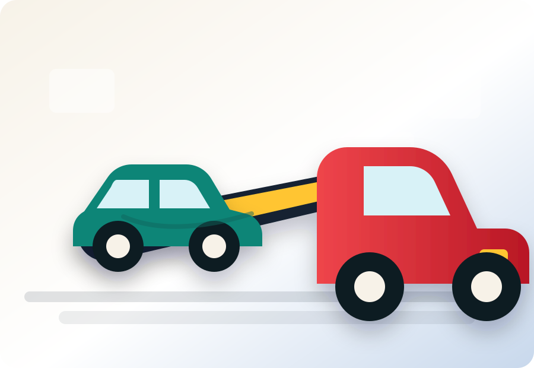

Gece kurtarma


Ümit veren hızlı destek
Yolculuk halindeyken aracınız arıza mı yaptı, akünüz mü bitti, yakıtınız mı tükendi ya da kaza sonrası çekiciye mi ihtiyacınız var? İstanbul Avrupa Yakası genelindeki gezici ekibimizle her marka ve model araç için oto kurtarma ve acil yol yardım hizmeti sunuyoruz.
Oto kurtarıcı görselleri



Hizmetlerimiz
Günün her saatinde arıza, kaza ve yolda kalma durumları için hızlı oto kurtarma desteği sağlıyoruz.
Akü bitmesi, yakıt bitmesi, lastik sorunu ve küçük arızalarda sahada pratik çözüm sunuyoruz.
Acil durumlarda konumunuza en yakın ekibi yönlendirerek bekleme sürenizi azaltıyoruz.
Hasarlı, çalışmayan veya hareket ettirilemeyen araçlar için uygun kurtarıcı ekipman kullanıyoruz.
Aracınızı servise, otoparka ya da belirttiğiniz adrese güvenli ve dikkatli şekilde taşıyoruz.
Şehir içi ve planlı araç taşıma işlemlerinde temiz iletişim ve doğru ekipmanla çalışıyoruz.
Kaza sonrası aracınızı bulunduğu noktadan güvenli şekilde alıp hedef noktaya ulaştırıyoruz.
Motor arızası, elektrik sorunu veya yürümeyen araçlarda hasarsız yükleme ve taşıma desteği veriyoruz.
Otopark, yol kenarı, rampa ve dar alanlarda aracınızın durumuna uygun kurtarma planı hazırlıyoruz.
Biz Kimiz?
YolYanı Oto Kurtarma; araç kurtarma, çekici ve yol yardım hizmetleri konusunda müşteri memnuniyetini ön planda tutan profesyonel bir ekiptir. Gelişmiş ekipman, doğru yönlendirme ve hasarsız taşıma yaklaşımıyla acil durumlarda yanınızdayız.
Amacımız yalnızca aracınızı taşımak değil; arıza, kaza veya yol yardım sürecinde size güven vermek, açık iletişim kurmak ve doğru çözümü en kısa sürede sunmaktır.
Nasıl Çalışır?
Bulunduğunuz konumu, araç modelini ve yaşadığınız sorunu paylaşın.
İhtiyaca uygun çekici veya yol yardım ekibi hızlıca yola çıkar.
Aracınız servise, otoparka veya istediğiniz adrese güvenle ulaştırılır.
Hizmet Bölgelerimiz
Sarıyer, Maslak, Levent, Beşiktaş, Şişli, Kağıthane, Bakırköy, Bağcılar, Güngören, Zeytinburnu ve Avrupa Yakası'nın 45 noktasına ulaşıyoruz.
SEO Bölgeler
SEO Hizmetler
Müşteri Memnuniyeti
"Gece saatinde aradım, konum alıp çok hızlı geldiler. Aracı servise sorunsuz bıraktık."
Emre K."Otomatik aracım için endişeliydim, yükleme sürecini sakin ve dikkatli yaptılar."
Derya A."Fiyatı baştan söylediler, süreç boyunca bilgilendirdiler. Güven veren bir ekip."
Murat S.Sık Sorulan Sorular
Konuma ve trafik durumuna göre değişmekle birlikte ortalama varış süremiz yaklaşık 20 dakikadır.
Evet. Akü takviye, yakıt takviye, lastik desteği, oto çekici ve oto kurtarma hizmetleri sunuyoruz.
Sarıyer, Maslak, Levent, Beşiktaş, Şişli, Kağıthane, Beyoğlu ve Avrupa Yakası'nın birçok noktasında hizmet veriyoruz.
Hemen çekici çağırın
Konumunuzu, araç modelinizi ve gitmek istediğiniz adresi paylaşın; ekip yönlendirmesini hızlıca yapalım.
İletişim
Telefonla arayın veya WhatsApp üzerinden araç modeli, bulunduğunuz konum ve gitmek istediğiniz adresi gönderin.